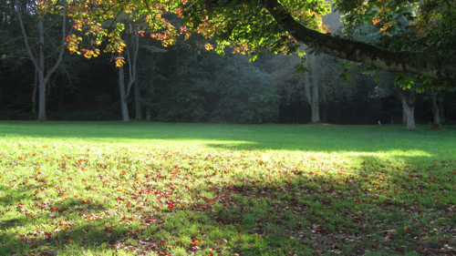

Who are you?
My name is Gonzalo. I study Computer Science at the University of Pablo de Olavide, Seville, Spain. Currently I am on a Erasmus scholarship and I am studying at FUNP, Namur, Belgium.
My interests:
I do Photography

And I do programming
My current focus is on:
- Ruby
- BBD – Behaviour Driven Development, using Cucumber and RSpec: I am reading The_Book
- Git – I cannot say how much I just love Git. Well, yes, I can. I took an entire week for programming a GitHub - SVN converter so I can use Git and GitHub while at the same time complying with the (ominous) SVN requirements at the school: GitSC
- Ruby on Rails – I did PHP, Struts 2, Perl but this is the fucking king that has come to claim the world. And I am set to become his most loyal apprentice. I am reading a great Book but I mostly just do my projects and when I don't know how to do something I ask my good old pal Google
- Distributed systems – Last year I took a class on Operative Systems. I was introduced to thread and process programming in C. But it wasn't until this year that I took a deep course on Distributed and Concurrent systems that I really started to appreciate the beautiful complexity of this domain. My current Star Project is DPovray, a distributed application for rendering 3D scenes using Ruby, Povray, Ruby on Rails and BrB
Projects
- Davinci – What to do in the free time that you have in an Erasmus Scholarship? I upgrade my social skills and create my first start up, Davinci. My Secret project :)
- DPovray (Link) – Distributed Povray is a suite of tools designed to ease the management and use of a cluster of machines for graphical rendering using Povray. This is my most important project, if you want to know how I work, check this one. I pay special attention to documentation and testing.
- GitSC (Link) – At school they didn't allow me to use Git. They wanted me to use SVN (did you hear that kitty screaming?) but I knew that Git is what I needed. I need agility, I need branches, I need GitHub, I need offline development. So I took a week to write GitSC which is a ruby script that can transfer commits from GitHub to a real SVN server. I did this while reading about BDD, so I used this mini project so test RSpec and Cucumber(no pun intended). In the process, I learnt a lot about Subversion, which confirmed even more my opinion about it(Sucks).
- UPO The Game 2D (Link) – It is a 2D spaceshooter videogame made using Python and Pygame. This project was my first project. I got a awesome tutor, Domingo Savio, that guided me through the development process.
- UPO The Game 3D – 3D videogame similar to the prior one. I used Java and the JMonkey game engine. I participated in the national open source competition with this project and was finalist at the local stage in Seville. I didn't like this one, though. The documentation for JMonkey was poor. But hey, I learnt Mercurial for this project.
In the past I had a touch a wide number of technologies. These are technologies that I have been exposed to but I am not expert of:
- Python and Pygame – I did a 2D Spaceshooter videogame, UPO The Game 2D.
- Java, JMonkey – Java was the main language in my school. I participated in a National Open Source Contest in the year 2009 with a 3D videogame, UPO The Game 3D. I didn't quite like the result. With that experience in mind, I prefer python and pygame.
- Struts 2 – I had a class on Struts and we had to develop a small project. I did a simple social network. I used Struts 2 because I found that it was the latest version. The rest of the alumni used strut1 because the powerpoint slides said so. Now they hate Struts. I know Struts 2 is cool.
- C – 2 years of school experience. Now that I am a rubyst, I don't look back. Go away you damn null pointers!
- CSS – I know CSS, this web site is an example. I can design and my mom say that I have good taste with fashion. But I am not an expert.
- HTML – I know HTML, but I am not expert. It is something that I would like to explore in detail in the near future.
- SDL – I made a simple dungeon game with a friend. Was my first game.
- Perl – I was exposed to the 'power' of Perl at school. The fact that a mathematician created that language explains a lot...
- Mercurial – The version control system. I used it in a couple of projects, but then I discovered Git and fell in love.
{kind=link}